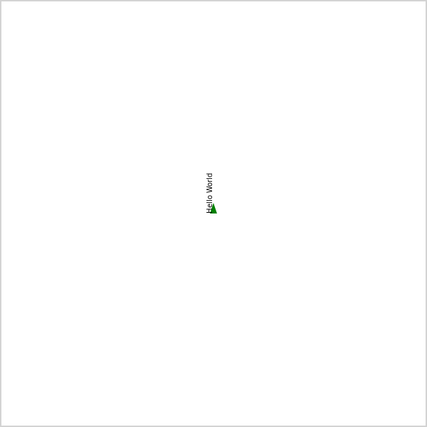
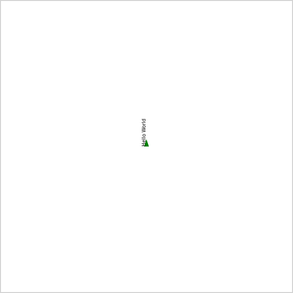

First program with a sideways Hello World. Type "Hi1" + RETURN in the command line input.



This page contains samples of graphics generated with the turtle graphics program. This is a graphical index, so clicking on an image will bring up the Turtle Graphic IDE loaded with the program to generate the image.
First program with a sideways Hello World. Type "Hi1" + RETURN in the command line input.

An aninmation is an image that appears to be moving. Here objects or colors are changed to suggest movement.


A tesselation is a mathematicians way of laying geometrically shaped tiles to completely cover a surface. Square tessellations are the simplest followed closely by rectangles, triangles and hexagons. Regular pentagons, those with equal angles cannot tessellate, but there are 18 pentagon shapes that do tessellate. Some shapes tessellate, but have unusual patterns that do not repeat (called non-periodic). Wall paper relys on periodic patterns, so a non-periodic pattern could not be used for wall paper.


. See more at https://en.wikipedia.org/wiki/Gosper_curve.")


 is a continuous fractal space-filling curve first described by the German mathematician David Hilbert in 1891. More information at https://en.wikipedia.org/wiki/Hilbert_curve.") "
"


Polyhedra are three-diminsional geometric objects. These include the five platonic solids: tetrahedron (4 triangle faces), cube (6 square faces), octahedron (8 triangle faces), dodecahedron (12 pentagon faces), and icosahedron (20 triangle faces). More information at https://en.wikipedia.org/wiki/Platonic_solids or at https://en.wikipedia.org/wiki/Polyhedron. There are various ways to display these in two dimensions including a model, that can be printed, cut out and glued, and a graph which shows all edges, vertices (points), and faces."
")
")